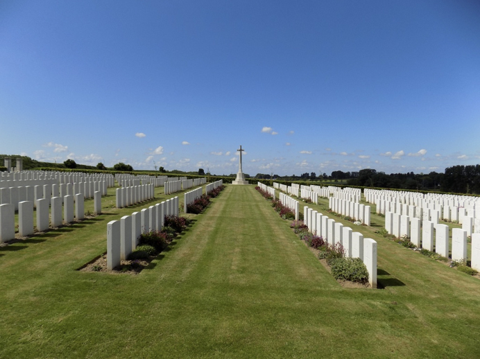

-1-MasterItem.svg)
Stories of Westminster United Church & its People / Page
68
Table
of Contents
Rev. DAvid christie
Hun stores of every description, including a
base canteen, which was certainly a find to us.
We were able to stock up with cigars, cigarettes,
honey, and tinned stuffs sufficient to last us
many days. Near here we were able to inspect a
hospital train captured by the cavalry; also a
train which had pulled into the station, filled
with reinforcements as our cavalry patrols
galloped into the town.
Tanks and Cavalry Win the Day
On the following morning we started off again,
now in support. Everyone was in the brightest
spirits, and declared they would march till they
dropped if need be. Never before had the Allies driven though so far, and we
were still going. We
soon found, however, that the opposition was stiffening. He had many guns in
position and the fire
was well directed with some high ground in the rear. We passed some Fritz guns
presently, busily
pumping lead into their late owners, a sight which cheered us all. The enemy
fire became heavier,
and from artillery formation to extended order and thence to advance by section
rushes, was the
only way we were able to keep going. Our patrol on the left then brought in word
that the troops on
our flanks could get no further, and this presently we could see for ourselves,
as a violent burst of
machine gun fire made everyone hug the ground and made plain our flank was in
the air. We
decided to await developments, as it was dangerous to advance further. A patrol
of cavalry dashed
past quite unmindful of the whistling bullets which emptied many of their
saddles. It always
seemed to me such a sad sight to see the horses stop and turn round and look
enquiringly at their
fallen riders, and then trot aimlessly away.

Above: Wancourt British Cemetery, Wancourt, France